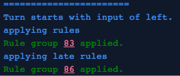

If you run a game with the verbose_logging prelude option you can avail yourself of the visual debugger.
As you play a level with this option, you'll see information about what rules were applied. By hovering over them (or tapping them on touchscreen), you can see the state of the level after the indicated rules were applied:

Changes are indicated with black+white (or your custom background/text colours) outlined boxes. In the above example, a new movement has been added to the indicated tile by the rule on line 139.
Movements are indicated with arrows overlayed on top of the cell. They don't tell you what object the movements are attached to in that cell, they just tell you that the movement exists somewhere in the cell (if you have several overlapping objects on several layers moving in multiple directions at once, you will see all its movement arrows overlaid).
The presence of rigid movements in a cell are indicated by a small r in the top-left:

 PuzzleScript
PuzzleScript